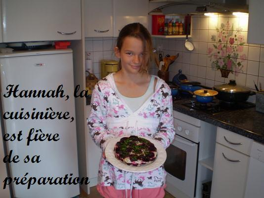
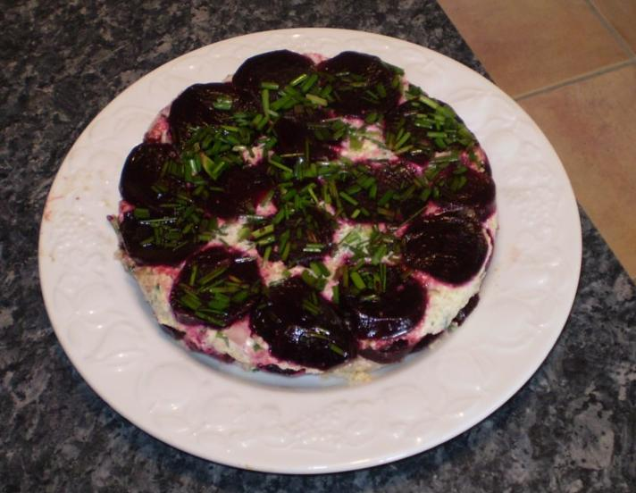

Recette n°224 : betteraves rouges et
quinoa, façon gâteau

Préparation :
1 - Tapisser un moule à gâteau d'un film culinaire.
2 - Tapisser le fond avec la ciboulette ciselée.
3 - Dans un premier saladier, mettre les rondelles de batterave, saler,
poivrer et remuer.
4 - Dans un second saladier, mélanger fromage, quinoa,
échalotes, filets d'huile et de vinaigre, saler et poivrer.
5 - Disposer en couches alternées les contenus des deux
saladiers.
6 - Replier le fim et mettre au réfriférateur à
reposer trois quarts d'heure.
7 - Au moment de servir, déplier le film et retourner sur un
plateau.

Observations :
Recette préparée avec Hannah à Quiberon le 1er
août
2009
pour la dernière journée française des Mathews ;
mets apprécié des adultes, mais trop compliqué
pour de jeunes enfants.